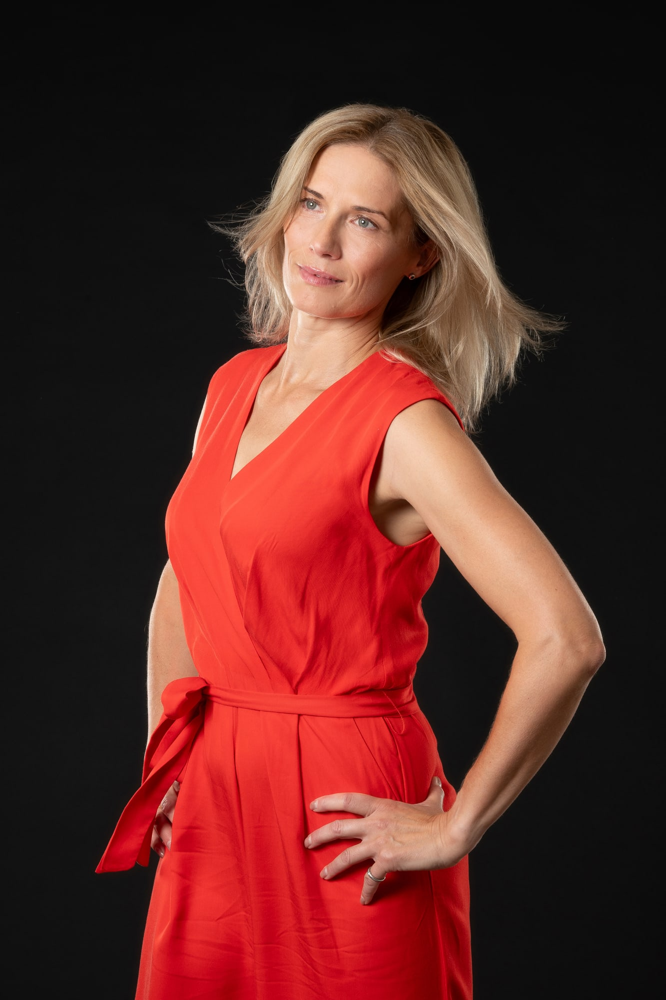
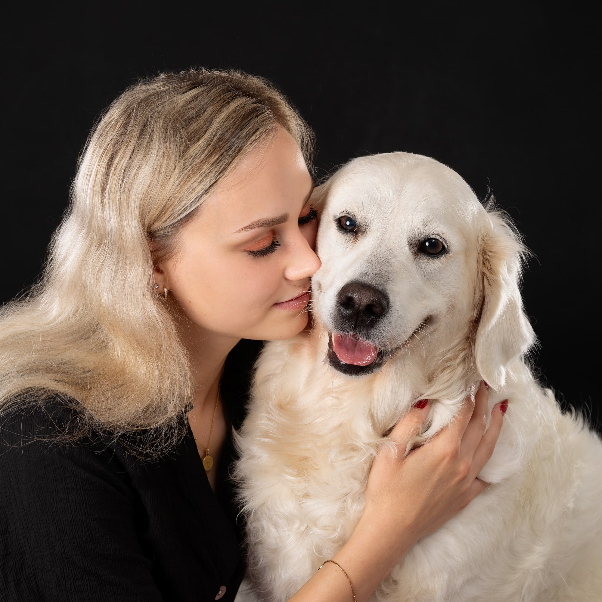
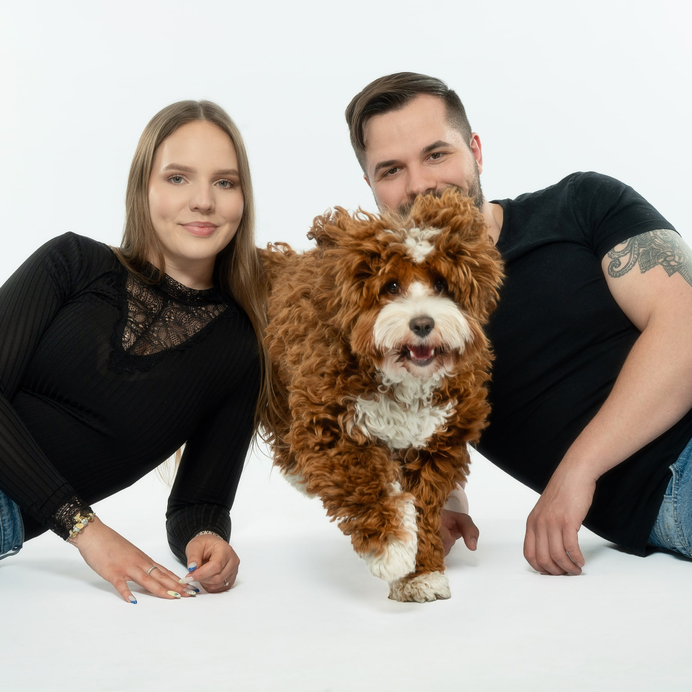
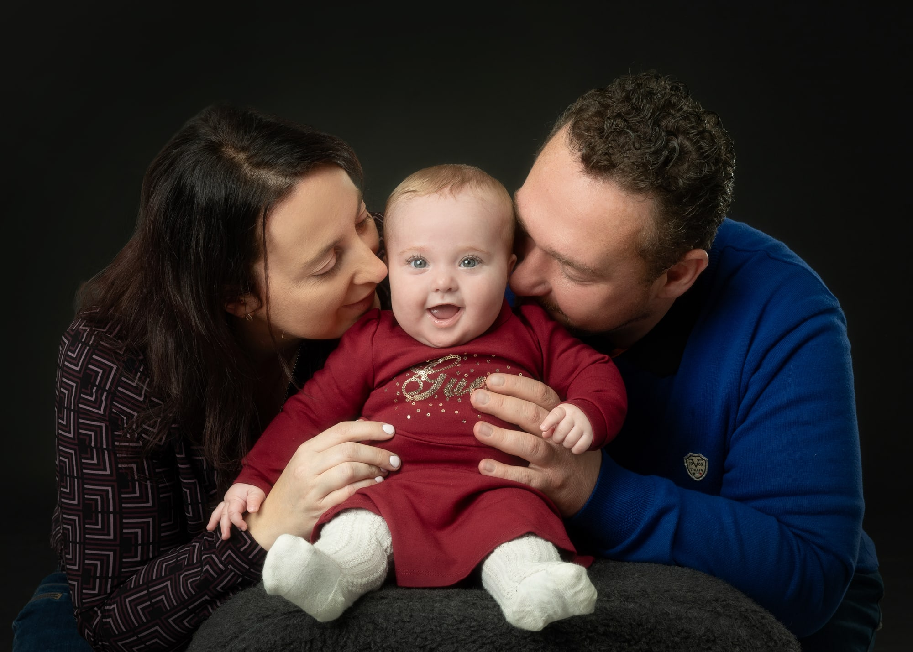
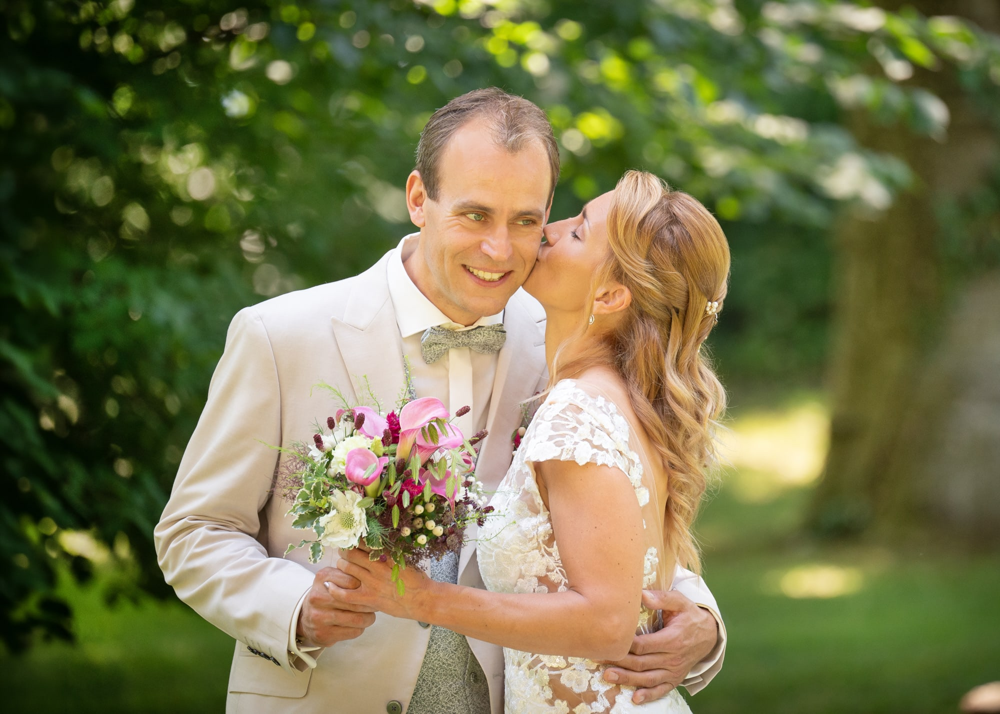
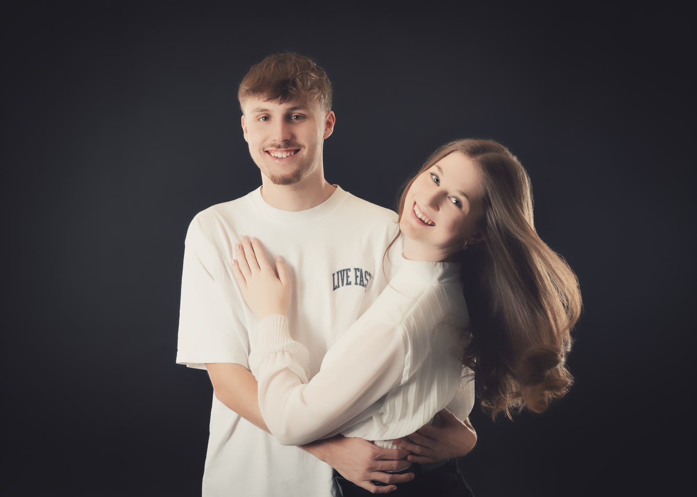

Privat · 01
Familienshooting
Ob kleines Shooting oder großes, umfangreiches Shooting: Sie sagen mir, was Sie sich vorstellen, und wir gestalten es gemeinsam. Fotografiert wird auch gern draußen.
Echte Nähe. Klarer Blick. Starke Bilder.
Portraits, Familien, Paare, Vierbeiner, Business- und Bewerbungsfotos bei Fotografenmeisterin Katrin Bernhard.
Telefon: 08165 / 80 97 97

Google-Bewertung
Fotografenmeisterin
Katrin Bernhard
Erfahrung
Fotografie seit über 35 Jahren
Arbeitsweise
Ich fotografiere seit über 35 Jahren und habe ein feines Gespür für Menschen und ihre Vierbeiner entwickelt. In kürzester Zeit erkenne ich, was Sie gerade brauchen: Bei Kindern, ob sie Action oder Ruhe möchten, im Business-Bereich, ob Sie Anleitung, eine klare Position oder einfach Zeit zum Ankommen brauchen. Jeder tickt vor der Kamera anders, und genau darauf stelle ich mich mit Empathie, Feingefühl und Herz ein. So fühlen Sie sich wohl, die Bilder zeigen Sie, wie Sie wirklich sind, und am Ende sagen Sie: „Das hat sogar richtig Spaß gemacht.“
Katrin Bernhard · Fotografenmeisterin
Leistungen
Privat · 01
Ob kleines Shooting oder großes, umfangreiches Shooting: Sie sagen mir, was Sie sich vorstellen, und wir gestalten es gemeinsam. Fotografiert wird auch gern draußen.
Privat · 02
Hier steht der Spaß im Vordergrund. Die Kinder dürfen sie selbst sein, und genau so entstehen natürliche, lebendige Bilder.
Privat · 03
Für werdende Mamas, die diese besondere Zeit festhalten möchten.
Privat · 04
Für Paare, die echte Emotionen und schöne gemeinsame Erinnerungen festhalten möchten.
Privat · 05
Für Frauen, die sich selbst in einem ästhetischen Licht sehen möchten. Mir ist wichtig, schöne Haut stilvoll und mit Respekt in Szene zu setzen, nicht mehr und nicht weniger.
Privat · 06
Für Menschen mit ihrem Tier, vor allem Hund und Herrchen oder Frauchen. Im Mittelpunkt stehen die Beziehung, die Liebe und der Spaß miteinander.
Business · 07
Für alle, die sich vor der Kamera nicht sicher fühlen. Bei mir ist genug Zeit, um Ihnen zu erklären, wie Sie stabil stehen und sich vorteilhaft positionieren, bis Sie sich wohlfühlen.
Business · 08 · ab 45 €
Passend zu Ihrem Ziel, zum Beispiel für eine Ausbildung oder für den nächsten Karriereschritt auf einer höheren Position. Wir stimmen Look und Ausdruck darauf ab.
Portfolio





Über mich
Fotografenmeisterin · seit über 35 Jahren
Viele, die sich sonst nicht gern fotografieren lassen, sind am Ende überrascht, wie schön ihre Bilder geworden sind. Viele Familien begleite ich seit Jahren, vom Babybauch über die Einschulung bis zur Hochzeit.
Standort
Termine nach Vereinbarung
Landkreis Freising, Landkreis Erding, Landkreis München
Eching, Hallbergmoos, Freising, Garching, München, Moosburg, Mainburg
Kontakt
Termine nach Vereinbarung